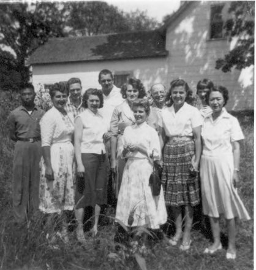

1959
1959
Världen: Robert Noyce på Fairchild Semiconductor uppfann det första riktiga IC-chippet. Noyces chip var gjort av kisel.
Världen: Start av en amerikansk TV-serie "One Step Beyond" värd John
Newland, "din guide till det övernaturliga "
(även "Vår guide i världen för det okända").
Presenterade berättelser som utforskade paranormala händelser och olika situationer som trotsade
"logisk" förklaring.
1959-1961; 3 säsonger, 96 episoder. Finns på
youtube!
2 jan. Dr. Young Oon Kim åker som första missionär till Eugene, Oregon i Amerika.


I början av 60-talet skrev hon en bok om De gudomliga principerna. Och jag fick den boken när jag först
gick med i San Francisco. Det var en liten blå bok. Den här boken var uppenbarligen gjord med kärlek. Den var
skriven på en gammal IBM sekreterar-skrivmaskin. Och mycket noggrant inbunden. Den hade redigerats på ett sådant
sätt att ord som inte var lämpliga hade klistrats över med andra ord så att boken var full av små lappar, men
mycket noggrant utförda.
David Hose;
Farewell Celebration for Dr. Young Oon Kim,
The Early Unification Church History - 1959 - 1965 - Galen Pumphrey

fröken Kim till höger.
Dr. Kim har studerat på Kwansei Gukuin universitetet i Japan.
Hon gjorde senare forskning vid Emmanuel College i universitetet i Toronto, och var under ett flertal år
professor i Nya Testamentet och Jämförande Religion vid Ehwa Kvinnliga Universitet i Seoul.
Under hennes livslånga ansträngning att undersöka och sammanbrygga den religiösa sanningen i Östern och
Västerlandet, så har hon deltagit i olika ekumeniska konferenser i Europa,
samt rest och undervisat åtskilliga gånger i USA.
World Religions del 1,2,3 utgiven 1976 av Dr. Yong Oon Kim
Mer om och av Dr. Young Oon Kim
- Tong-il grundas.
10 jan. Första läger "workshop" för alla vittnare. (40 dagars)
dec. Det finns nu 40 UC kyrkor över hela SydKorea.